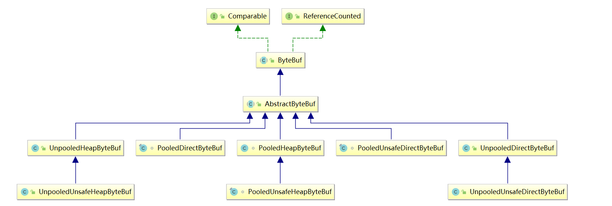
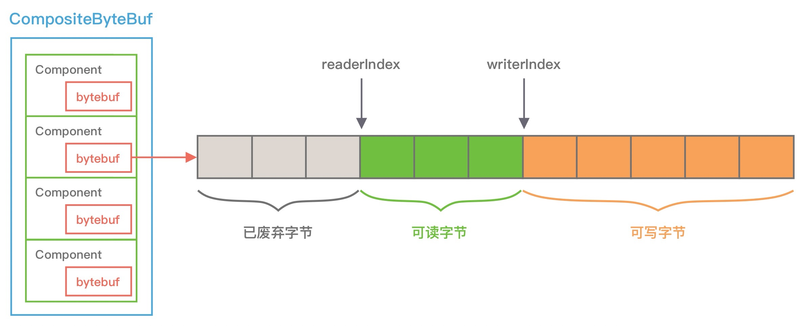
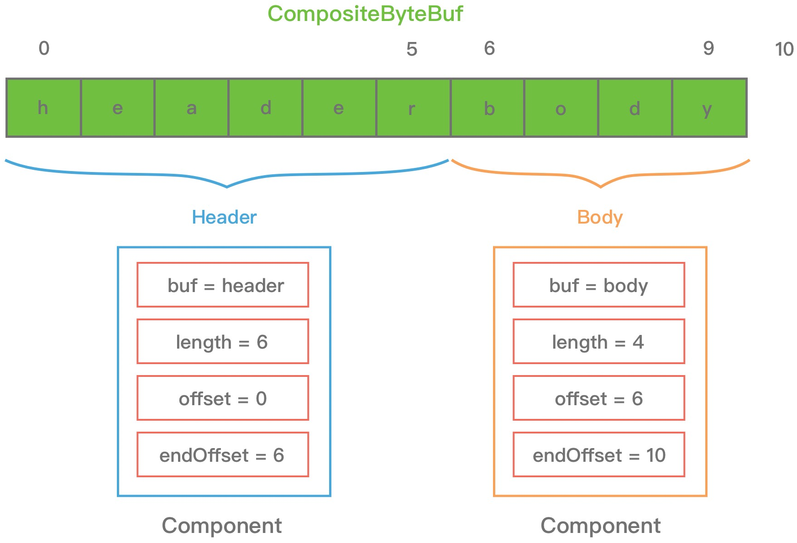
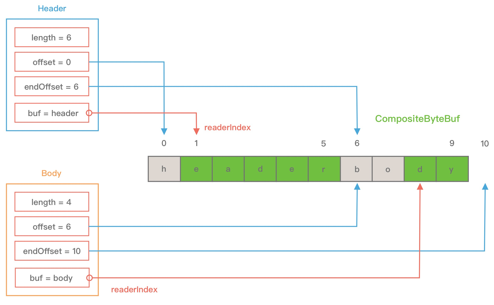

透彻理解Java网络编程（十四）——Netty原理：ByteBuf缓冲区
Netty中大量使用了堆外内存，以提升性能。我们知道，对于Java程序而言，堆外内存不受 JVM 管理，直接由操作系统管理，所以性能上往往比堆内内存更好，如果你想实现高效的 I/O 操作、缓存常用的对象、降低 JVM GC 压力，堆外内存是一个非常不错的选择。我们来看下堆外内存的具体优点：
- 堆内内存由 JVM GC 自动回收，GC 需要”Stop the World“，而堆外内存由于不受 JVM 管理，所以一定程度上可以降低 GC 对应用运行时带来的影响；
- 当进行 I/O 操作时，堆内内存都需要转换为堆外内存，然后再与底层硬件设备交互，所以直接使用堆外内存可以减少一次内存拷贝；
- 堆外内存可以实现进程之间、JVM 多实例之间的数据共享。
当然，堆外内存需要手动释放，这一点跟 C/C++ 很像，所以如果使用不当会造成内存泄漏。
关于如何在Java中使用堆外内存，读者可以参考本专栏的《透彻理解Java网络编程（六）——Java NIO》，本文我主要讲解Netty中的ByteBuf原理，它就大量运用了堆外内存。
一、ByteBuf简介
Java NIO提供了ByteBuffer作为网络通信中高频使用的数据载体，而Netty则自己重新实现了一个性能更高、易用性更强的ByteBuf，相比于 ByteBuffer，它提供了很多非常酷的特性：
- 容量可以按需动态扩展，类似于 StringBuffer；
- 读写采用了不同的指针，读写模式可以随意切换，不需要调用 flip 方法；
- 通过内置的复合缓冲类型可以实现零拷贝；
- 支持引用计数；
- 支持缓存池。
1.1 内部结构
Netty 重新设计的 ByteBuf 有效地区分了可读、可写以及可扩容数据，解决了Java NIO ByteBuffer 无法扩容以及读写模式切换烦琐的缺陷，我们来看下 ByteBuf 的内部结构：

从上图中可以看出，ByteBuf 包含三个指针：读指针 readerIndex、写指针 writeIndex、最大容量 maxCapacity，根据指针的位置又可以将 ByteBuf 内部结构可以分为四个部分：
- 废弃字节：已经丢弃的无效字节数据；
- 可读字节：ByteBuf 中可以被读取的字节内容，可以通过
writeIndex - readerIndex计算得出。从 ByteBuf 读取 N 个字节，readerIndex 就会自增 N，readerIndex 不会大于 writeIndex，当 readerIndex == writeIndex 时，表示 ByteBuf 已经不可读； - 可写字节：向 ByteBuf 中写入数据都会存储到可写字节区域。向 ByteBuf 写入 N 字节数据，writeIndex 就会自增 N，当 writeIndex 超过 capacity，表示 ByteBuf 容量不足，需要扩容；
- 可扩容字节：表示 ByteBuf 最多还可以扩容多少字节，当 writeIndex 超过 capacity 时，会触发 ByteBuf 扩容，最多扩容到maxCapacity 为止，超过 maxCapacity 再写入就会出错。
1.2 引用计数
ByteBuf 是基于引用计数设计的，它实现了 ReferenceCounted 接口，ByteBuf 的生命周期是由引用计数所管理。只要引用计数大于 0，表示 ByteBuf 还在被使用；当 ByteBuf 不再被其他对象所引用时，引用计数为 0，那么代表该对象可以被释放。
当新创建一个 ByteBuf 对象时，它的初始引用计数为 1，当 ByteBuf 调用 release() 后，引用计数减 1，所以不要误以为调用了 release() 就会保证 ByteBuf 对象一定会被回收。你可以结合以下的代码示例做验证：
ByteBuf buffer = ctx.alloc().directbuffer();
assert buffer.refCnt() == 1;
buffer.release();
assert buffer.refCnt() == 0;
Netty之所以采用引用计数来设计ByteBuf，是为了缓存池化ByteBuf对象。当引用计数为 0，该 ByteBuf 可以被放入到对象池中，避免每次使用 ByteBuf 都重复创建，对于实现高性能的内存管理有着很大的意义。
此外 Netty 可以利用引用计数的特点实现内存泄漏检测工具。JVM 并不知道 Netty 的引用计数是如何实现的，当 ByteBuf 对象不可达时，一样会被 GC 回收掉，但是如果此时 ByteBuf 的引用计数不为 0，那么该对象就不会释放或者被放入对象池，从而发生了内存泄漏。Netty 会对分配的 ByteBuf 进行抽样分析，检测 ByteBuf 是否已经不可达且引用计数大于 0，判定内存泄漏的位置并输出到日志中，你需要关注日志中 LEAK 关键字。
1.3 继承体系
ByteBuf 有多种实现类，每种都有不同的特性，下图是 ByteBuf 的家族图谱：

所有ByteBuf都可以划分归属到三个不同的维度中：
- Heap/Direct：堆内和堆外内存。Heap 指的是在 JVM 堆内分配，底层依赖的是字节数据；Direct 则是堆外内存，不受 JVM 限制，分配方式依赖 JDK 底层的 ByteBuffer；
- Pooled/Unpooled：池化和非池化内存。Pooled 是从预先分配好的内存中取出，使用完可以放回 ByteBuf 内存池，等待下一次分配。而 Unpooled 是直接调用系统 API 去申请内存，确保能够被 JVM GC 管理回收；
- Unsafe/非Unsafe：操作方式是否安全。Unsafe 表示每次调用 JDK 的 Unsafe 对象操作物理内存，依赖 offset + index 的方式操作数据。非 Unsafe 则不需要依赖 JDK 的 Unsafe 对象，直接通过数组下标的方式。
Netty通过ByteBufAllocator分配器来创建ByteBuf，分配器有两种实现：
- PoolByteBufAllocator：池化ByteBuf分配器，将ByteBuf实例放入内存池中，提高了性能，将内存碎片减少到最小。它底层采用了jemalloc高效内存分配的策略，该策略被好几种现代操作系统所采用；
- UnpooledByteBufAllocator：普通未池化ByteBuf分配器，它没有把ByteBuf放入内存池中，每次被调用时，返回一个新的ByteBuf实例，通过Java的垃圾回收机制回收。
在Netty中，默认的分配器为ByteBufAllocator.DEFAULT，可以通过Java系统参数
io.netty.allocator.type进行配置，配置时使用字符串值："unpooled"，"pooled"。 在Netty 4.1版本中，默认分配器为PooledByteBufAllocator。
这里重点比较下HeapByteBuf、DirectByteBuf和CompositeBuffer：
| 类型 | 说明 | 优点 | 缺点 |
|---|---|---|---|
| Heap ByteBuf | 内部为一个字节数组，可通过hasArray判断是否为Heap ByteBuf |
未池化时，能够快速分配和释放 | 写入底层Socket时，需要先将数据复制到直接内存 |
| Direct ByteBuf | 内部数据存储在操作系统的物理内存中 | 不受JVM堆内存限制，与底层Socket交互时速度快 | 分配和释放的开销大，在Java中操作时，需要从直接内存复制到JVM内存 |
| CompositeBuffer | 多个缓冲区的组合表示 | 可以组合多个 Buffer 对象合并成一个逻辑上的对象，避免通过传统内存拷贝的方式将几个 Buffer 合并成一个大的 Buffer。 |
上面三种缓冲区的类型，无论哪一种，都可以通过池化（Pooled）、非池化（Unpooled）两种分配器来创建和分配内存空间。
1.4 基本使用
本节，我分为指针操作、数据读写和内存管理三个方面介绍 ByteBuf 的核心 API。
指针操作 API
ByteBuf的指针操作主要针对readerIndex和writeIndex这两个指针：
readerIndex() & writeIndex()
readerIndex() 返回当前读指针的 readerIndex 位置，writeIndex() 返回当前写指针 writeIndex 位置。markReaderIndex() & resetReaderIndex()
markReaderIndex() 用于保存当前 readerIndex 的位置，resetReaderIndex() 则将当前 readerIndex 重置为之前保存的位置。
数据读写 API
isReadable()
isReadable() 用于判断 ByteBuf 是否可读，如果 writerIndex 大于 readerIndex，那么 ByteBuf 是可读的，否则是不可读状态。readableBytes()
readableBytes() 可以获取 ByteBuf 当前可读取的字节数，可以通过writerIndex - readerIndex计算得到。readBytes(byte[] dst) & writeBytes(byte[] src)
readBytes() 和 writeBytes() 是两个最为常用的方法。readBytes() 是将 ByteBuf 的数据读取相应的字节到字节数组 dst 中，readBytes() 经常结合 readableBytes() 一起使用，dst 字节数组的大小通常等于 readableBytes() 的大小。readByte() & writeByte(int value)
readByte() 是从ByteBuf中读取一个字节，相应的readerIndex + 1；同理，writeByte是向 ByteBuf 写入一个字节，相应的writerIndex + 1。getByte(int index) & setByte(int index, int value)
与 readByte() 和 writeByte() 相对应的还有 getByte() 和 setByte()，get/set 系列方法也提供了 8 种基础类型的读写，get/set 方法不会改变指针位置。
内存管理 API
release() & retain()
之前已经介绍了引用计数的基本概念，每调用一次 release() 引用计数减 1，每调用一次 retain() 引用计数加 1。slice() & duplicate()
slice() 等同于slice(buffer.readerIndex(), buffer.readableBytes())，默认截取 readerIndex 到 writerIndex 之间的数据，最大容量 maxCapacity 为原始 ByteBuf 的可读取字节数，底层分配的内存、引用计数都与原始的 ByteBuf 共享。
duplicate() 与 slice() 不同的是，duplicate()截取的是整个原始 ByteBuf 信息，底层分配的内存、引用计数也是共享的。如果向 duplicate() 分配出来的 ByteBuf 写入数据，那么都会影响到原始的 ByteBuf 底层数据。copy()
copy() 会从原始的 ByteBuf 中拷贝所有信息，所有数据都是独立的，向 copy() 分配的 ByteBuf 中写数据不会影响原始的 ByteBuf。
最后，通过一个示例来理解ByteBuf的使用：
public class ByteBufTest {
public static void main(String[] args) {
ByteBuf buffer = ByteBufAllocator.DEFAULT.buffer(6, 10);
printByteBufInfo("ByteBufAllocator.buffer(5, 10)", buffer);
buffer.writeBytes(new byte[]{1, 2});
printByteBufInfo("write 2 Bytes", buffer);
buffer.writeInt(100);
printByteBufInfo("write Int 100", buffer);
buffer.writeBytes(new byte[]{3, 4, 5});
printByteBufInfo("write 3 Bytes", buffer);
byte[] read = new byte[buffer.readableBytes()];
buffer.readBytes(read);
printByteBufInfo("readBytes(" + buffer.readableBytes() + ")", buffer);
printByteBufInfo("BeforeGetAndSet", buffer);
System.out.println("getInt(2): " + buffer.getInt(2));
buffer.setByte(1, 0);
System.out.println("getByte(1): " + buffer.getByte(1));
printByteBufInfo("AfterGetAndSet", buffer);
}
private static void printByteBufInfo(String step, ByteBuf buffer) {
System.out.println("------" + step + "-----");
System.out.println("readerIndex(): " + buffer.readerIndex());
System.out.println("writerIndex(): " + buffer.writerIndex());
System.out.println("isReadable(): " + buffer.isReadable());
System.out.println("isWritable(): " + buffer.isWritable());
System.out.println("readableBytes(): " + buffer.readableBytes());
System.out.println("writableBytes(): " + buffer.writableBytes());
System.out.println("maxWritableBytes(): " + buffer.maxWritableBytes());
System.out.println("capacity(): " + buffer.capacity());
System.out.println("maxCapacity(): " + buffer.maxCapacity());
System.out.println(System.lineSeparator());
}
}
输出结果如下：
------ByteBufAllocator.buffer(5, 10)-----
readerIndex(): 0
writerIndex(): 0
isReadable(): false
isWritable(): true
readableBytes(): 0
writableBytes(): 6
maxWritableBytes(): 10
capacity(): 6
maxCapacity(): 10
------write 2 Bytes-----
readerIndex(): 0
writerIndex(): 2
isReadable(): true
isWritable(): true
readableBytes(): 2
writableBytes(): 4
maxWritableBytes(): 8
capacity(): 6
maxCapacity(): 10
------write Int 100-----
readerIndex(): 0
writerIndex(): 6
isReadable(): true
isWritable(): false
readableBytes(): 6
writableBytes(): 0
maxWritableBytes(): 4
capacity(): 6
maxCapacity(): 10
------write 3 Bytes-----
readerIndex(): 0
writerIndex(): 9
isReadable(): true
isWritable(): true
readableBytes(): 9
writableBytes(): 1
maxWritableBytes(): 1
capacity(): 10
maxCapacity(): 10
------readBytes(0)-----
readerIndex(): 9
writerIndex(): 9
isReadable(): false
isWritable(): true
readableBytes(): 0
writableBytes(): 1
maxWritableBytes(): 1
capacity(): 10
maxCapacity(): 10
------BeforeGetAndSet-----
readerIndex(): 9
writerIndex(): 9
isReadable(): false
isWritable(): true
readableBytes(): 0
writableBytes(): 1
maxWritableBytes(): 1
capacity(): 10
maxCapacity(): 10
getInt(2): 100
getByte(1): 0
------AfterGetAndSet-----
readerIndex(): 9
writerIndex(): 9
isReadable(): false
isWritable(): true
readableBytes(): 0
writableBytes(): 1
maxWritableBytes(): 1
capacity(): 10
maxCapacity(): 10
结合代码示例，总结一下 ByteBuf API 使用时的注意点：
- write 系列方法会改变 writerIndex 位置，当 writerIndex 等于 capacity 的时候，Buffer 置为不可写状态；
- 向不可写 Buffer 写入数据时，Buffer 会尝试扩容，但是扩容后 capacity 最大不能超过 maxCapacity，如果写入的数据超过 maxCapacity，程序会直接抛出异常；
- read 系列方法会改变 readerIndex 位置，get/set 系列方法不会改变 readerIndex/writerIndex 位置。
二、CompositeByteBuf
CompositeByteBuf 是 Netty 中实现零拷贝机制非常重要的一个数据结构，CompositeByteBuf 可以理解为一个虚拟的 Buffer 对象，它是由多个 ByteBuf 组合而成，但是在 CompositeByteBuf 内部保存着每个 ByteBuf 的引用关系，从逻辑上构成一个整体。
2.1 基本使用
比较常见的像 HTTP 协议数据可以分为头部信息 header和消息体数据 body，分别存在两个不同的 ByteBuf 中，通常我们需要将两个 ByteBuf 合并成一个完整的协议数据进行发送，可以使用如下方式完成：
ByteBuf httpBuf = Unpooled.buffer(header.readableBytes() + body.readableBytes());
httpBuf.writeBytes(header);
httpBuf.writeBytes(body);
可以看到，如果想实现 header 和 body 这两个 ByteBuf 的合并，需要先初始化一个新的 httpBuf，然后再将 header 和 body 分别拷贝到新的 httpBuf。合并过程中涉及两次 CPU 拷贝，这非常浪费性能。
Unpooled工具类还有一个
wrappedBuffer方法，可以将不同的数据源的一个或者多个ByteBuf装成一个大的 CompositeByteBuf 对象，包装后生成的 ByteBuf 对象和原始 ByteBuf 对象是共享底层的 byte 数组。
如果使用 CompositeByteBuf ，则非常简单：
CompositeByteBuf httpBuf = Unpooled.compositeBuffer();
httpBuf.addComponents(true, header, body);
CompositeByteBuf.addComponents() 方法可以添加多个 ByteBuf，但是底层的 byte 数组是复用的，不会发生内存拷贝。对于用户来说，它可以当作一个整体进行操作。那么 CompositeByteBuf 内部是如何存放这些 ByteBuf，并且如何进行合并的呢？
2.2 内部结构
我们通过一张图看下 CompositeByteBuf 的内部结构：

从图上可以看出，CompositeByteBuf 内部维护了一个 Components 数组。在每个 Component 中存放着不同的 ByteBuf，各个 ByteBuf 独立维护自己的读写索引，而 CompositeByteBuf 自身也会单独维护一个读写索引。
由此可见，Component 是实现 CompositeByteBuf 的关键所在，下面看下 Component 结构定义：
private static final class Component {
// 原始的ByteBuf
final ByteBuf srcBuf;
// srcBuf去除包装之后的ByteBuf
final ByteBuf buf;
// CompositeByteBuf的起始索引相对于srcBuf读索引的偏移
int srcAdjustment;
// CompositeByteBuf的起始索引相对于buf的读索引的偏移
int adjustment;
// Component相对于CompositeByteBuf的起始索引位置
int offset;
// Component相对于CompositeByteBuf的结束索引位置
int endOffset;
//...
}
我以 HTTP 协议中 header 和 body 为例，通过一张图来描述 CompositeByteBuf 组合后其中 Component 的布局情况，如下所示：

从图中可以看出，header 和 body 分别对应两个 ByteBuf，假设 ByteBuf 的内容分别为 "header" 和 "body"，那么 header ByteBuf 中 offset~endOffset 为 0~6，body ByteBuf 对应的 offset~endOffset 为 6~10。
由此可见，Component 中的 offset 和 endOffset 可以表示当前 ByteBuf 可以读取的范围，通过 offset 和 endOffset 可以将每一个 Component 所对应的 ByteBuf 连接起来，形成一个逻辑整体。
此外 Component 中 srcAdjustment 和 adjustment 表示 CompositeByteBuf 起始索引相对于 ByteBuf 读索引的偏移。初始 adjustment = readIndex - offset，这样通过 CompositeByteBuf 的起始索引就可以直接定位到 Component 中 ByteBuf 的读索引位置。
我们再来看，当 header ByteBuf 读取 1 个字节，body ByteBuf 读取 2 个字节，此时每个 Component 的属性又会发生什么变化：

三、堆外内存泄漏
堆外内存泄漏问题是 Netty 应用程序的热点问题，经常遇到 Java 进程占用内存很高，但是堆内存并不高的情况。这里我分享一些排查堆外内存泄漏的基本思路。
3.1 堆外内存回收
jmap -histo:live <pid>手动触发 FullGC，观察堆外内存是否被回收，如果正常回收很可能是因为堆外设置太小，可以通过 -XX:MaxDirectMemorySize 调整。当然这无法排除堆外内存缓慢泄漏的情况，需要借助其他工具进行分析。
3.2 堆外内存代码监控
JDK 默认采用 Cleaner 回收释放 DirectByteBuffer，Cleaner 继承于 PhantomReference，因为依赖 GC 进行处理，所以回收的时间是不可控的。对于 hasCleaner 的 DirectByteBuffer，Java 提供了一系列不同类型的 MXBean 用于获取 JVM 进程线程、内存等监控指标，代码实现如下：
BufferPoolMXBean directBufferPoolMXBean = ManagementFactory.getPlatformMXBeans(BufferPoolMXBean.class).get(0);
LOGGER.info("DirectBuffer count: {}, MemoryUsed: {} K", directBufferPoolMXBean.getCount(), directBufferPoolMXBean.getMemoryUsed()/1024);
对于 Netty 中 noCleaner 的 DirectByteBuffer，直接通过 PlatformDependent.usedDirectMemory() 读取即可。
3.3 Netty自带检测工具
Netty 提供了自带的内存泄漏检测工具，我们可以通过以下命令启用堆外内存泄漏检测工具：
-Dio.netty.leakDetection.level=paranoid
Netty 一共提供了四种检测级别：
- disabled：关闭堆外内存泄漏检测；
- simple：以 1% 的采样率进行堆外内存泄漏检测，消耗资源较少，属于默认的检测级别；
- advanced：以 1% 的采样率进行堆外内存泄漏检测，并提供详细的内存泄漏报告；
- paranoid，追踪全部堆外内存的使用情况，并提供详细的内存泄漏报告，属于最高的检测级别，性能开销较大，常用于本地调试排查问题。
Netty 会检测 ByteBuf 是否已经不可达且引用计数大于 0，判定内存泄漏的位置并输出到日志中，我们需要关注日志中 LEAK 关键字。
3.4 MemoryAnalyzer内存分析
我们可以通过传统 dump 内存的方法排查堆外内存泄漏问题，运行如下命令：
jmap -dump:format=b,file=heap.dump pid
dump 完内存堆栈之后，将其导入 MemoryAnalyzer 工具进行分析内存泄漏的可疑点，最终定位到代码源头。关于如何 MemoryAnalyzer 工具我在此就不展开了，需要你自行学习研究，这是每一个 Java 程序员的必备技能。
3.5 Btrace 神器
Btrace 是一款通过字节码检测 Java 程序的排障神器，它可以获取程序在运行过程中的一切信息，与 AOP 的使用方式类似。我们可以通过如下方式追踪 DirectByteBuffer 的堆外内存申请的源头：
@BTrace
public class TraceDirectAlloc {
@OnMethod(clazz = "java.nio.Bits", method = "reserveMemory")
public static void printThreadStack() {
jstack();
}
}
四、总结
本章，我对Netty中的ByteBuf内部结构和基本使用进行了讲解，并重点分析了CompositeByteBuf这个特殊ByteBuf的底层原理。同时，我们要注意使用对外内存过程中的内存泄露问题，我这里重点介绍了一些排查思路。Netty 对于 ByteBuf 做了很多精进的设计和优化，理解ByteBuf的底层原理有助于我们更好的开发Netty程序。